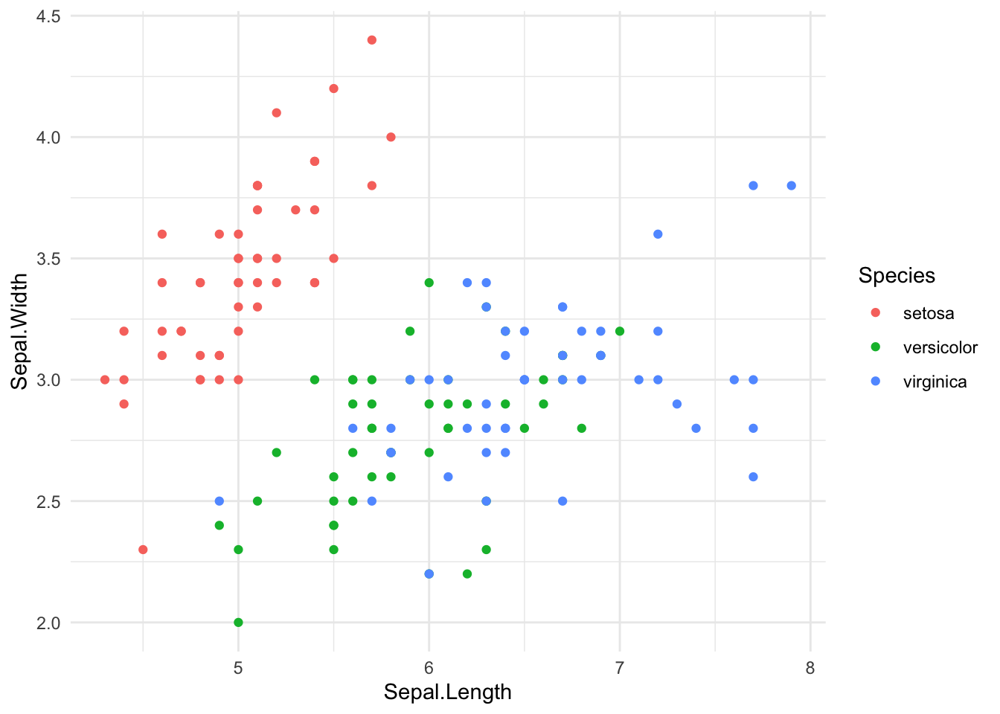
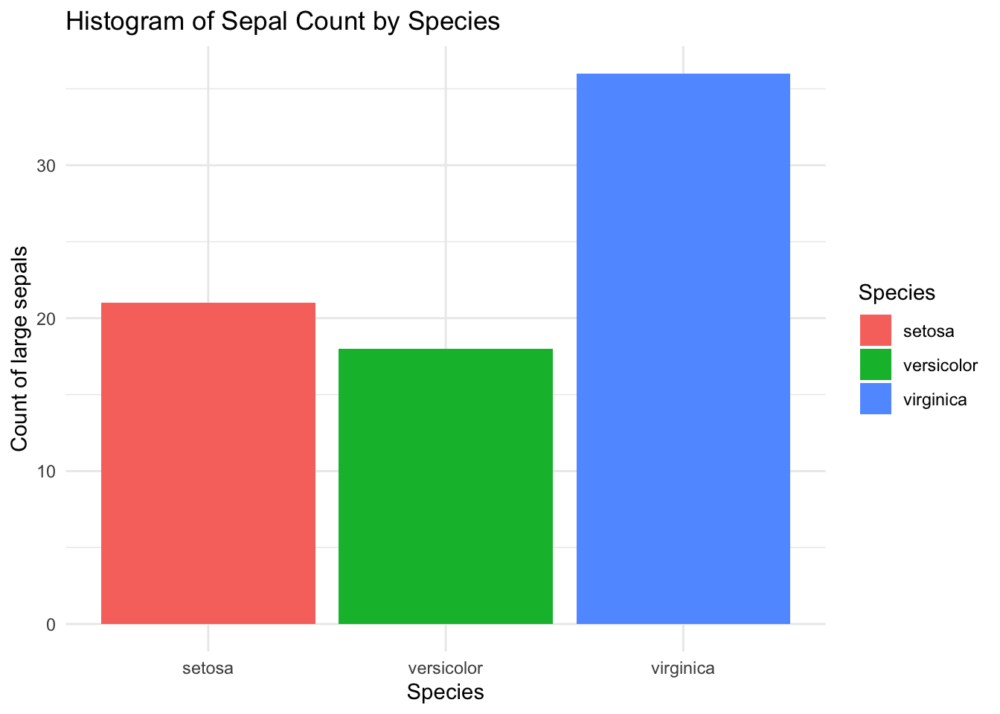

#_______________________________________
# This script opens a dataset and proceeds
# to data visualization.
#
# Author: Matéo Moglia
# Date: 12/02/2025
#_______________________________________
setwd("/Users/mmoglia/Dropbox/courses/polytechnique/2025_eco1s002/forStudents")
path <- "/Users/mmoglia/Dropbox/courses/polytechnique/2025_eco1s002/forStudents"Tutorial 1
For this first tutorial, we are going to download R and Rstudio, discover the software and make our first data visualisation. We are also going to see how to export them and input them in a .tex file.
Download R and RStudio
R is a free software used in many contexts: data cleaning, data visualisation, econometrics, machine and deep learning, among others. It is an object-based format, meaning that we are going to manipulate objects through a series of command.
R can be used directely from a command terminal, but we prefer to use RStudio, an IDE, to make our lifes easier.
- Download R
- Download RStudio
You can download both from here https://posit.co/download/rstudio-desktop/.
- Open RStudio
Folder organization
Computers are organized around folder. We are going to work in a working directory (wd), but we need to identify it.
/Users/mmoglia/
├── Documents/
│ ├── Personal/
│ │ ├── Finances/
│ │ ├── Health/
│ │ └── Education/
│ └── Miscellaneous/
├── Downloads/
├── Music/
│ ├── Artists/
│ │ ├── Artist_Name/
│ │ │ ├── Albums/
│ │ │ └── Singles/
│ └── Playlists/
├── Pictures/
│ ├── Vacations/
│ ├── Events/
│ ├── Family/
│ └── Miscellaneous/
├── Videos/
│ ├── Movies/
│ ├── Tutorials/
│ └── Personal/
└── courses/
├── 2024_ECO102/
├── 2025_eco1s002/
└── Research/Here we are going to work in ~/courses/2025_eco1s002/. This folder may (and should!) contains subfolders, for instance: /code, /output, /raw_data, etc.
Naming convention
A typical tip is to choose simple and short titles for the files and the scripts. For instance, this file is named tutorial1.qmd. Your code can be named code_tutorial1. It should be self-explanatory.
Tip
Avoid at all cost to use spaces or special characters in your file names. Prefer instead an underscore or a score.
First step in R
Open a script
R has built-in functions but most useful functions should be called using libraries. These libraries should be first downloaded then loaded into your project.
First, open RStudio and opens a new script. You should have an empty page. You may want to write some words at the top of it to have an idea of what this code does. You can use # to comment code.
Here, I set the working directory and create an object called path using the <- operator. I will be able to call my path thanks to this object instead of typing the path everytime I need it.
Our first data
We can load a built-in dataframe, the iris dataset, into an object called data.
data <- iris
class(data)[1] "data.frame"head(data) Sepal.Length Sepal.Width Petal.Length Petal.Width Species
1 5.1 3.5 1.4 0.2 setosa
2 4.9 3.0 1.4 0.2 setosa
3 4.7 3.2 1.3 0.2 setosa
4 4.6 3.1 1.5 0.2 setosa
5 5.0 3.6 1.4 0.2 setosa
6 5.4 3.9 1.7 0.4 setosaData description
By clicking on the object in the Environement panel, I can visualize it. I can also write some code to describe it:
table(data$Species)
setosa versicolor virginica
50 50 50 summary(data$Sepal.Length) Min. 1st Qu. Median Mean 3rd Qu. Max.
4.300 5.100 5.800 5.843 6.400 7.900 Here, I use the table function to have a frequency table of the variable Species and the function summary to compute summary statistics of the variable Sepal.Length.
Now, I want to visualize the data. To do so, we can use base R function plot:
plot(iris$Sepal.Length,iris$Sepal.Width)
Our first graph!
We can also use a very popular library for dataviz, ggplot2. First, we install it, then we load it, and we are going to be able to use it.
install.packages("ggplot2",repos = "http://cran.us.r-project.org")
The downloaded binary packages are in
/var/folders/yt/nsycb5g50479n593xl12f6k80000gn/T//RtmpR3GRqa/downloaded_packageslibrary(ggplot2)
Note
All packages have to be downloaded and loaded this way. Note that once you’ve downloaded a package on your computer, you do not need to install it but you still need to load it through the library function.
g1 <- ggplot(data = data, mapping = aes(x = Sepal.Length, y = Sepal.Width, color = Species)) +
geom_point() +
theme_minimal()
g1
This looks better! To produce this graph we used different information:
- The
ggplotcommand takesdataandmappingas input.datashould be the dataset you want to visualize, here we named itdatamappingtakesaes(for aesthetics)- Here, the aesthetics are the
xandyaxis, and thecolorone, to distinguish between the species.
- Here, the aesthetics are the
geom_pointallows to plot… pointstheme_minimalmakes the graph tidy, with a white background, etc.
Now, we can save it:
ggsave(filename = paste0(path,"/output/graph_iris.png"),plot = g1)Saving 7 x 5 in image
Tip
The function paste0 is useful to concatenate text. Here, instead of writing the full path, we concatenate the object path (which happens to be our path) and the end of the path, including the name of the output.
Data manipulation
To finish this -short- introduction to R, I introduce a new package, probably the most popular one in R: dplyr. As before, we install then load the library.
install.packages("dplyr",repos = "http://cran.us.r-project.org")
The downloaded binary packages are in
/var/folders/yt/nsycb5g50479n593xl12f6k80000gn/T//RtmpR3GRqa/downloaded_packageslibrary(dplyr)
Attaching package: 'dplyr'The following objects are masked from 'package:stats':
filter, lagThe following objects are masked from 'package:base':
intersect, setdiff, setequal, unionLet’s imagine we want to filter the dataset to keep only the setosa. In base R, we need to extract the lines of iris for which Species=="setosa". Because R is object based, we can multiple objects, here: base_setosa.
The data frame
irisis close to a matrix, hence, we can extract using notations close to the matrix ones. Hencedata[1,1]would give us the first line of the first column (in this order) ofdata. Here, we filt the lines using a condition:data$Species=="setosa". Do not forget the,.
# Base R: Filter rows where Species is "setosa"
base_setosa <- data[data$Species == "setosa", ]
head(base_setosa) Sepal.Length Sepal.Width Petal.Length Petal.Width Species
1 5.1 3.5 1.4 0.2 setosa
2 4.9 3.0 1.4 0.2 setosa
3 4.7 3.2 1.3 0.2 setosa
4 4.6 3.1 1.5 0.2 setosa
5 5.0 3.6 1.4 0.2 setosa
6 5.4 3.9 1.7 0.4 setosaUsing dplyr and the pipe operator %>%, we apply the function filter on Species.
# dplyr: Filter rows where Species is "setosa"
dplyr_setosa <- iris %>%
filter(Species == "setosa")
head(dplyr_setosa) Sepal.Length Sepal.Width Petal.Length Petal.Width Species
1 5.1 3.5 1.4 0.2 setosa
2 4.9 3.0 1.4 0.2 setosa
3 4.7 3.2 1.3 0.2 setosa
4 4.6 3.1 1.5 0.2 setosa
5 5.0 3.6 1.4 0.2 setosa
6 5.4 3.9 1.7 0.4 setosaNext, we can select specific columns.
# Base R: Select only Sepal.Length and Sepal.Width columns
base_columns <- iris[, c("Sepal.Length", "Sepal.Width")]
head(base_columns) Sepal.Length Sepal.Width
1 5.1 3.5
2 4.9 3.0
3 4.7 3.2
4 4.6 3.1
5 5.0 3.6
6 5.4 3.9# dplyr: Select only Sepal.Length and Sepal.Width columns
dplyr_columns <- iris %>%
select(Sepal.Length, Sepal.Width)
head(dplyr_columns) Sepal.Length Sepal.Width
1 5.1 3.5
2 4.9 3.0
3 4.7 3.2
4 4.6 3.1
5 5.0 3.6
6 5.4 3.9# Base R: Create a new column with Sepal.Area (Sepal.Length * Sepal.Width)
iris$Sepal.Area <- iris$Sepal.Length * iris$Sepal.Width
head(iris) Sepal.Length Sepal.Width Petal.Length Petal.Width Species Sepal.Area
1 5.1 3.5 1.4 0.2 setosa 17.85
2 4.9 3.0 1.4 0.2 setosa 14.70
3 4.7 3.2 1.3 0.2 setosa 15.04
4 4.6 3.1 1.5 0.2 setosa 14.26
5 5.0 3.6 1.4 0.2 setosa 18.00
6 5.4 3.9 1.7 0.4 setosa 21.06# dplyr: Create a new column with Sepal.Area (Sepal.Length * Sepal.Width)
dplyr_iris <- iris %>%
mutate(Sepal.Area = Sepal.Length * Sepal.Width)
head(dplyr_iris) Sepal.Length Sepal.Width Petal.Length Petal.Width Species Sepal.Area
1 5.1 3.5 1.4 0.2 setosa 17.85
2 4.9 3.0 1.4 0.2 setosa 14.70
3 4.7 3.2 1.3 0.2 setosa 15.04
4 4.6 3.1 1.5 0.2 setosa 14.26
5 5.0 3.6 1.4 0.2 setosa 18.00
6 5.4 3.9 1.7 0.4 setosa 21.06The advantage of dplyr is to allow for many computations:
dplyr_grouped <- iris %>%
mutate(Sepal.Area = Sepal.Length * Sepal.Width) %>%
mutate(is.Sepal.Large = ifelse(Sepal.Area > median(Sepal.Area),1,0)) %>%
group_by(Species) %>%
summarize(mean_sepal_length = mean(Sepal.Length),
count_sepal_large = sum(is.Sepal.Large))
print(dplyr_grouped)# A tibble: 3 × 3
Species mean_sepal_length count_sepal_large
<fct> <dbl> <dbl>
1 setosa 5.01 21
2 versicolor 5.94 18
3 virginica 6.59 36This dataset can be, of course represented visually:
ggplot(dplyr_grouped, aes(x = Species, y = count_sepal_large, fill = Species)) +
geom_bar(stat = "identity") +
labs(title = "Histogram of Sepal Count by Species",
x = "Species", y = "Count of large sepals") +
theme_minimal()
But we can also export it to LaTeX:
install.packages("xtable",repos = "http://cran.us.r-project.org")
The downloaded binary packages are in
/var/folders/yt/nsycb5g50479n593xl12f6k80000gn/T//RtmpR3GRqa/downloaded_packageslibrary(xtable)colnames(dplyr_grouped) <- c("Species", "Mean_Sepal_Length", "Count_Sepal_Large")
print(xtable(dplyr_grouped), type = "latex", file = paste0(path,"/output/sepal_large.tex"))First step in LaTeX
LaTeX is very popular software to produce scientic writings. It is extremely easy to use. From now on, it is mandatory to produce output you would hand using LaTeX. You have three options to use LaTeX:
- Use any text editor and compile the file using the console
- Use an IDE, like TexStudio or TexLive
- Use an online IDE like Overleaf
There are plenty of tutorials over the web (or ChatGPT) to know how to use LaTeX, so I am going to be quick.
Open a blank project in Overleaf. It should look like that:
\documentclass{article}
\usepackage{graphicx} % Required for inserting images
\title{Tutorial one}
\author{Matéo Moglia}
\date{February 2024}
\begin{document}
\maketitle
\section{Introduction}
\end{document}You can directly write any text you like.
Math mode
Most interesting is the math mode. You can write in line using $ x = y$ or in an equation environment:
\begin{equation}
\mu_k = \int_0^{+\infty} x^k f(x) dx = \int_0^{+\infty} t^{-\frac{k}{\alpha}} \exp ^{-t} dt
\end{equation}An environment starts with
\begin{name}and ends with\end{name}. The environment can be an equation, to center a large chunk of text, a figure, a table, etc.
Include our results
\begin{figure}
\centering # To center the graph
\includegraphics[width=8,height=10]{graph/graph_iris.png}
\caption{Iris Sepals Length and Width}
\end{figure}We work within the figure environment, center the graphic, include it with some options and add a caption. The graph should be uploaded in the project first! Here, I stored it in the folder graph.
To input the table, we can use \input{}:
\input{table/sepal_large.tex}No need to specify the environment as it was directly created by the xtable function earlier on!
Compile the file
LaTeX is not a “What You See Is What You Get” software, like Word or Canvas. You need to compile the code to obtain the results (usually a .pdf), that you can further download.